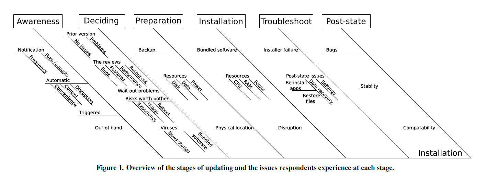
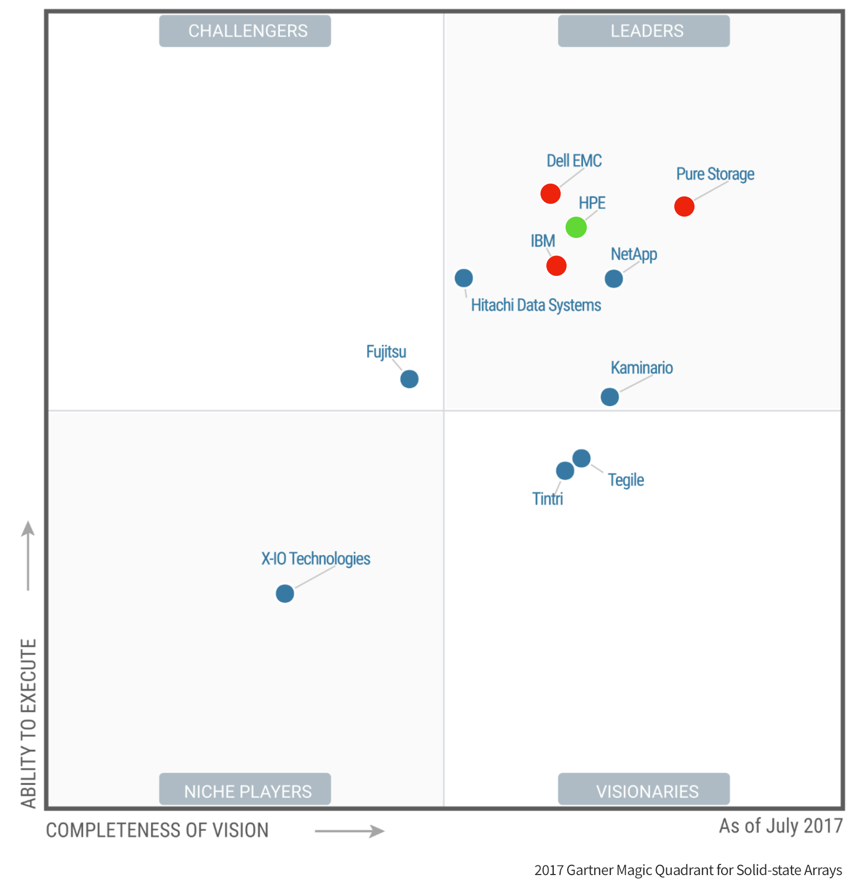
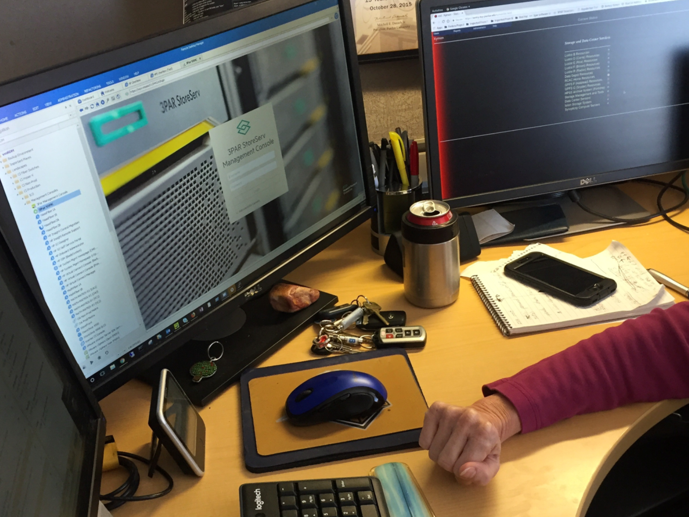
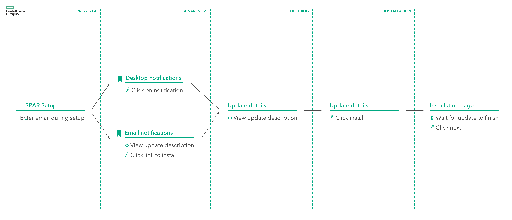
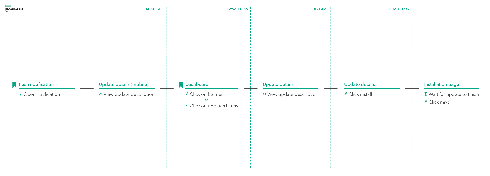

As part of our UX Design Experience Studio we worked with Hewlett Packard Enterprise and their 3PAR StoreServ flash storage arrays.
Team Members: Abby Perez (Project owner), Nick Gould (Project co-lead), Delaney Rundell (Project co-lead), AJ Vetter, Anna Ding, Austin Johnson, Lucca McKay, Kassandra Melkey
Problem statement: Update notifications for HPE 3PAR StoreServ flash storage arrays were ineffective at communicating the right information to users and motivating them to update.
HPE.com

Research
-
> Our users
HPE was able to provide us with information about our users as a starting point for our research. Based upon their information we were able to research more into these users to discover their needs and requirements through interviews.
- Storage specialists
- System administrators
- Storage architects
-
> Literature review
We looked at a variety of articles about updates and notifying users of updates. The main points we found about update notifications were the topics of Habituation, users don't understand why updates are important, and that updates are seen as an inconvenience. We also learned from a paper published in the proceedings of the 2016 CHI Conference on Huan Factors in Computing Systems that updating can be segmented into 6 distinct stages. We used these stages throughout the rest of the project to organize our data and findings.
 -
> Competitive analysis
The team tried to look at the competition for 3PAR. This included products from PureStorage, Dell, and IBM. Unfortunately, without purchasing these systems, we were unable to analyze them.
 -
> User interview
The team interviewed a Virtualization Systems Administrator at Purdue University, a customer and user of 6 3PAR arrays. She was able to give us valuable insight into how she is notified about updates and the process she goes through each time she receives a notification of an update. We were able to discuss her pain points in the process as well as the parts of the process that she liked. This data helped us to later build a map of the user process flow from the very beginning (signing up for notifications) to the end (deciding whether or not to update).
 -
> Cognitive walkthrough
We were able to remote into a computer at HPE that had access to a 3PAR array. Two members of the team were able to try to go through the process of updating a 3PAR array while the rest of the team observed the process. This allowed us to not only see the process first-hand, but also gave us more details about the process of updating step-by-step.
-
> Data analysis
The team came together to analyze all the data we had collected so far. We were able to build a process flow of the current process and identify the pain points associated with each step. Understanding the current flow and understanding the reasoning and motivations for each step in the process was essential in being able to develop an improved process that enhanced the user experience while still providing the performance the user expected from the system.
Design
-
> Designing an improved process flow
Using the data we had collected about the current user process flow, we worked to determine what steps could be automated, condensed, or eliminated. By analyzing the process step-by-step, we were able to develop a multi-channel user process flow that would allow the user to receive notifications across any platform they are using, making sure the notifications are getting to the users no matter where they are.
 -
> Sketching
The team worked to develop sketches of the screens and interactions that would guide the user through the new update notification process. These included designs of email notifications, desktop notifications for Windows 10 and MacOS, mobile notifications for iOS and Android, banner notifications for within the management console of the 3PAR arrays, as well as concepts of a new update section within the management console.
-
> Mockups
Those sketches were then refined and cleaned up into mockups that we could present to our sponsors and the rest of the class. These cleaned up mockups better illustrated our ideas to the audience.
Testing
-
> Testing
With the exception of email notifications, much of the notifications' designs were restricted by their respective style guidelines (Windows, MacOS, Android, and iOS). The team decided to instead focus on getting input on the content of these notifications using Desirability testing. We collectively chose 20 adjectives (10 positive and 10 negative) and had participants choose 3 adjectives to describe each design. We also collected their motivations for choosing these adjectives. Unfortunately, we were unable to get in contact with the users of 3PAR systems, so instead we looked to the Computer and Networking Information Technology major here at Purdue for participants who would be willing to give us input. While these participants were new to the 3PAR system, they possessed the necessary background knowledge to understand the notifications and the terminology used.
-
> Data analysis
We used Microsoft Excel to analyze the qualitative data (the number of times each word was used for each design and how unanimous were the participants in their choices) from the desirability testing. This was done by using custom macros within Excel. Excel was able to give a weighted positivity score to each notification design. Looking at the highest and lowest scoring designs, we reflected on the qualitative data (the participants' comments) for each of these designs to determine the reasoning behind these scores.
-
> Design iteration
Using the data from our analysis, we now had a list of the content our users wanted in the notifications. Using this list, we iterated on one of our designs to create our final design.
-
> Presentation
All our data and the processes we used were collected and we created a Keynote to present this data to our class and our sponsors. HPE was highly satisfied with our solution, and they appreciated the multi-channel approach we took towards delivering notifications to their users. They found that some solutions would be much easier to implement than others, and that we could expect to see our work reflected as early as the next few updates to 3PAR systems.